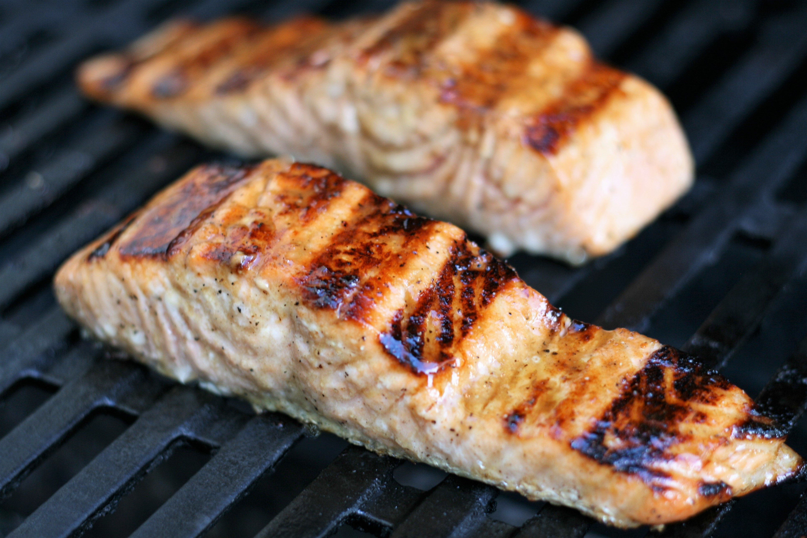

Norwegian Glazed Salmon 🇳🇴

Description
This Christmas, treat your guests to succulent, melt in the mouth
Norwegian Salmon.
Ingredients
- 2 tablespoons dark brown sugar.
- 2 tablespoons apple cider vinegar.
- 2 tablespoons olive oil.
- 1 teaspoon Dijon mustard.
- ½ teaspoon coarsely ground black pepper.
- 6 (3 ounce) fillets salmon fillets, thawed.
Steps
-
Combine brown sugar, apple cider vinegar, olive oil, Dijon mustard, and
pepper in a bowl for the marinade.
-
Place salmon fillets into a shallow glass dish and pour 1/2 of the
marinade over the fish. Reserve remaining marinade. Cover and
refrigerate for 1 hour.
-
Preheat an outdoor grill for medium heat and lightly oil the grate.
Discard marinade from the glass dish.
-
Grill salmon, brushing with reserved marinade several times, until it
flakes easily with a fork, 4 to 6 minutes.
Previous recipe
Next recipe
Go back home